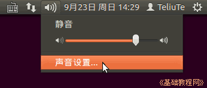

Audacity 音频编辑器教程
作者：TeliuTe 来源：基础教程网
八、电脑内录 返回目录 下一课在声音设置中设置输出为立体声时，可以直接录制电脑的播放的音乐；
1、电脑内录
1）点屏幕右上角小喇叭图标，选择“声音设置”；

2）在出来的设置面板中，点“硬件”标签，如果没有“硬件”标签，则在终端运行 sudo apt-get install gnome-panel 安装 gnome-panel，然后注销，点脚丫图标选 GNOME Classic 登录；
3）在硬件标签中记住现在的配置，然后点下边的“配置”，在设备列表中，选择“模拟立体声输出”或者“Digital Stereo”输出；
4）Windows 中的声音设置，请参阅：http://teliute.org/win/gw/lesson9/lesson9.html；
5）然后在电脑中播放音乐，在Audacity中点录音按钮即可，录制好已后导出音乐；
6）录制完以后，记得再把声音设置改回原来的配置；
本节学习了电脑内录的基础知识，如果你成功地完成了练习，请继续学习下一课内容；
本教程由86团学校TeliuTe制作|著作权所有
基础教程网：http://teliute.org/
美丽的校园……
转载和引用本站内容，请保留版权信息和本站链接。